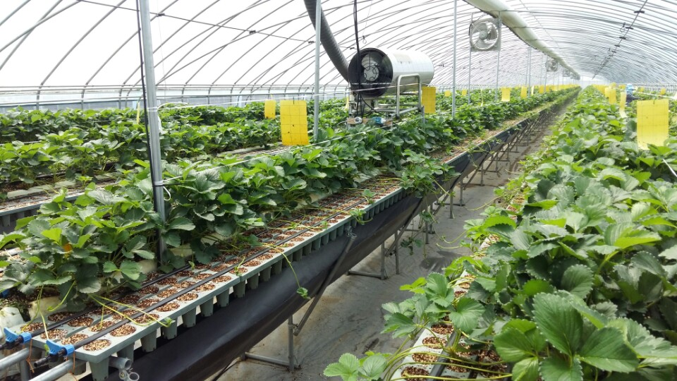

아르바이트 수시모집
모집 기간:4월~9월
(평일, 주말 상관없음)
하는 일: 딸기 육모 관리( 런너 유인, 잎 따기, 꽃 따기 , 기타 청소)
일하는 시간: 8:00시 부터 18:00 까지
급여: 일당 50.000원
런너 유인이 무엇인가요?

딸기 런너란 딸기의 줄기를 말합니다. 딸기는 계속 번지려는 번식능력이 있는데 이 줄기가 퍼져나가는 역할을합니다.
이 때 줄기의 눈으로부터 새로운 딸기의 모종이 시작되고 흙 위에 올려 놓으면 뿌리가 자라면서 새순이 나고 꽃이 피고 딸기가 새로이 열리게 됩니다.
이를 잘 도와주기 위한 것이 딸기 런너 유인이라는 작업입니다!